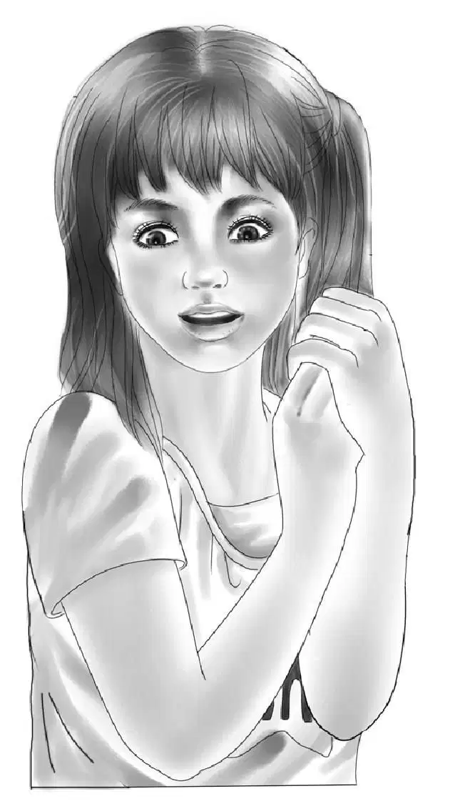
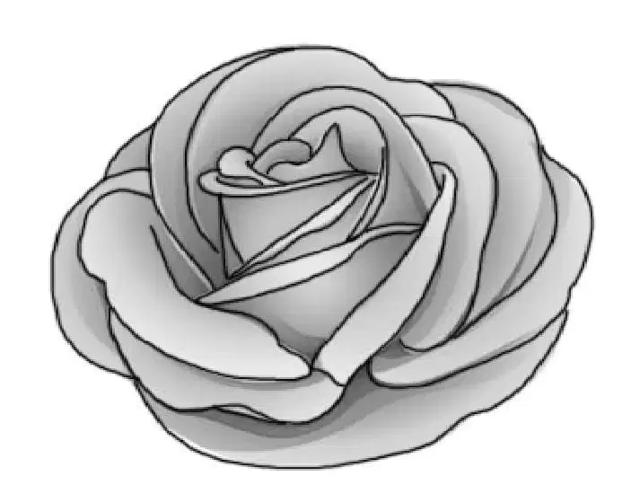

Lost and Found
为了帮助马克斯叔叔的餐厅重新开张，要做的事情可真不少。

杰西和维莉给新砌的大窗户安上了颜色明亮的黄色窗帘。小杰和塞米写了一个故事，是关于摇摆木马的。奥登先生将这个故事印在餐垫上，餐垫的中间是一幅摇摆木马图。亨利和班尼还专门做了一些架子，摆放旧玩具，并给架子涂上了油漆。马克斯叔叔则把新标志放在店门外。
“摇摆木马餐厅”定在星期六开张，那天客人如潮，声势浩大。《绿野镇报》还刊登了开业的消息。头一天，奥登家的孩子们连同小杰和塞米，一起把旧玩具送到马克斯叔叔那儿。杰西和维莉在每张桌子上摆放了鲜花。
那只美妙而古老的威廉·卡韦摇摆木马，用奥登家的旅行车运了过来，小杰和塞米把木马搬下车。不一会儿，木马就被安置在门口一个显眼的位置，供来餐厅的孩子们尽情参观。孩子们可以摸它的鼻子，就是不能骑上去，要不然这只年迈的木马可承受不起。
开业当天，餐厅上上下下、里里外外全都打扫得干干净净，焕然一新。绚烂的阳光透过新窗户洒落进来，马克斯叔叔给餐厅又添置了不少桌椅。新招牌挂在门外的铁柱上，餐具垫已经在桌子上摆好，一切都准备就绪了。
奥登兄妹和海先生一家在中午前就过来了，大家都兴奋无比，简直没法做其他事了，但他们还是尽可能地帮马克斯叔叔打理着餐厅：杰西和维莉负责摆放餐具，班尼和海家的孩子则帮忙削土豆。
“你们可帮大忙啦！”马克斯叔叔说，“要是没有你们，我真不知道该怎么办。”
塞米接道：“我们所做的这些，估计会让您觉得我们就是‘摇摆木马餐厅’的小主人吧？不管怎样，我们都不能置身事外。”
杰西感叹了一句：“真希望我们不要这么快就去旅行，可下周我们就得出发了。”
“那太让人伤心啦！”马克斯叔叔说，“我还不知道你们就要离开这儿呢。”
塞米安慰道：“还有我们呢，马克斯叔叔，我们会留在这儿的。”
小杰补充道：“我们会陪你的，我们会经常来这里吃晚餐和午饭。”
此时，一切准备就绪，只剩下等待了。11点钟时，还没有一个顾客光临。所有人都开始担心，会不会根本就没有客人上门。
但是，11点半一到，一切都发生了逆转，大家转而开始担心的是：顾客会不会太多了！只见源源不断的客流蜂拥进店内。
好多小朋友都是慕名而来的，他们喜欢摇摆木马，喜欢餐垫上的故事，当然，也喜欢马克斯叔叔的料理。他们恳求父母以后经常带他们过来。
最后一名顾客离开后，奥登兄妹和海先生一家终于可以坐下来畅聊一番了，这可真是旗开得胜的一天！
约翰·海说道：“开张一般都是最忙的，以后不会天天都这样。”
“但愿如此，”马克斯叔叔感慨道，“我喜欢自己招待小朋友，听他们聊天。要是餐厅的事情我一个人就能打理过来，那就最好不过啦。”
“不过，今天您也听到了，”班尼说道，“孩子们都很喜欢这儿，他们还会再来。”
马克斯叔叔突然笑了起来：“有件事差点儿忘了。现在没外人在场了，我要给你们一个惊喜哦！少安毋躁。”
说话间，马克斯叔叔已经转到柜台后面，再出来时，手里多了一个大蛋糕。
“看哪！”杰西高兴地叫道，“马克斯叔叔，这是你亲自做的吗？”
“是呀，”马克斯叔叔回答说，“作为对大家的致谢。”
这是马克斯叔叔最杰出的作品了：乳白色的糖霜犹如晶莹的雪花，上面用粉红色的玫瑰和淡绿色的叶子点缀着。蛋糕正中央是一个由糖霜制成的摇摆木马。

“天啊，太漂亮了，我都不忍心切开了！”维莉叹为观止。
蛋糕色香味俱全，它很快就被切成几块，被大家一抢而光——这可是对马克斯叔叔表达感激之情的一个绝佳方式。
塞米消灭完一大块蛋糕才开口说话：“班尼，我想和你聊点事儿。”
“说吧，”班尼说道，“我听着呢。”
“我好想感谢你所做的一切，”塞米说，“我以前根本不知道该怎么拔钉子，也不会爬树……好多事儿我都不知道怎么做——甚至连交朋友也不会。可现在，我能和所有人交上朋友。”
其他人也在仔细听着，心里都明白这是事实。
而班尼的回答是：“塞米，听我说吧，实际上我得感谢你，感谢你所教会我的一切。”
“我教你？”塞米说道，“我没有教你做任何事啊！”
“噢，塞米，你有。从你和小杰身上，我学到了应该闭上嘴巴，少说话——要学会思考，这就是我未来要做的。”
“噢，小班班，千万别！”杰西说道。

“如果你不再哇啦哇啦，那就不是原来的你啦！”
“这样啊……那我就再考虑考虑吧。”班尼说道。
所有人都哈哈大笑起来。
小杰接着说道：“我也一直在想，我觉得咱俩应该为了树屋而感谢奥登他们，要不是他们帮忙建树屋，所有的一切都不会发生。”
“小杰，你说得对，”塞米说道，“要不然我们永远都找不到望远镜。”
“永远不会发现小圆窗。”小杰接了一句。
“也绝不会找到摇摆木马。”海夫人加入了进来。
“也不会有‘摇摆木马餐厅’的存在。”海先生补充道。
马克斯叔叔点点头。
“许多丢失的东西都被找了回来：望远镜、摇摆木马、密室——还有老弟。”他望着约翰·海，“没有树屋的话，我不会这么快就找回我的弟弟。约翰，你说呢？”
“没错，马克斯，真高兴我们又和好如初啦。”他激动地握住了马克斯的手。
该各自告别回家了，海夫人拉着杰西和维莉的手，发自内心地微笑着，却什么也说不出来。
海先生随同奥登先生并肩走出来，说道：“有了这些经历，我们一家会相处得融洽温馨许多，就如同您家一样。我们现在才发现，孩子对我们来说才是无价之宝，比世界上任何宝贝都重要。”
“好极了，”爷爷笑着说，“很高兴你们能这么想。我也是在很久之前，走了很多弯路，才认识到这一点。”他说这话的时候，想到了孙子们以前是如何在一辆旧棚车里安家的。
亨利开车回家的路途中，班尼发着感慨：“这次玩得可真尽兴！但最令人开心的是——海先生和马克斯叔叔又和好了。”
所有人都对班尼说的话表示赞同。
